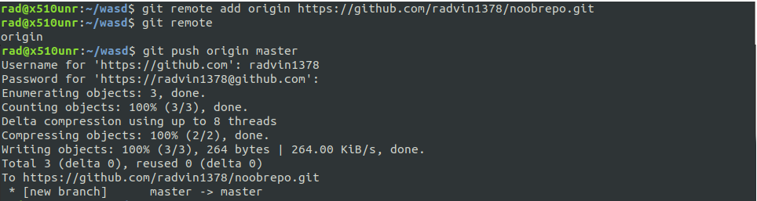

Git, Github and the Workflow
What is git?
Git is the most commonly used version control system. Git tracks the changes you make to files, so you have a record of what has been done, and you can revert to specific versions should you ever need to. Git also makes collaboration easier, allowing
changes by multiple people to all be merged into one source. So regardless of whether you write code that only you will see, or work as part of a team, Git will be useful for you.
Git is software that runs locally. Your files and their history are stored on your computer. Online hosts (such as GitHub) can be used to store a copy of the files and their revision history on remote. Having a centrally located place where you can upload
your changes and download changes from others, enable you to collaborate more easily with other developers. Git can automatically merge the changes, so two people can even work on different parts of the same file and later merge those
changes without losing each other’s work!
Initialization
Go to a folder that you want git to vaayinokkal (track), open this folder in terminal (or in git bash if you use that).
~ git init
This command initializes the current folder a git local repo. i.e git is tracking all and every changes in this folder.
If you've cloned the repo from github, then you don't need to do git init
You can use git status to display the state of the working directory and the staging area. It lets you see which changes have been staged, which haven't, and which files aren't being tracked by Git.
Staging
Okay big words, huh. Don’t worry. I’ll explain what staging is. Once we initialize the folder as a git repo, we need to tell git specifically what files to track. Assume we have a file named "noobprogram.py" in our local repo (i.e the folder that we've
done
git init on).
~ git add noobprogram.py
The above command adds the file ‘noobprogram.py’ to an area called staging area. This will tell git to track these files and they will be a part of the next commit.
You can use "." in place of 'noobprogram.py' to stage all the files in the repo :
~ git add .
Commiting
Now we need to commit, i.e to save all the changes that we've done in the staging area. This allows us to push all the changed code to a remote repo (i.e Github repo).
~ git commit -m "Your message about the commit"
The message at the end of the commit should be something related to what the commit contains - maybe it's a new feature, maybe it's a bug fix, maybe it's just fixing a typo.
Pushing
Now all our code in the local repo is commited. All we have to do now is to push the code to github, i.e your remote repo.
If you want to create a new remote repo, log in on Github and create one without initializing README file.
So we need to specify where we need to push our code to, i.e to which repo we need to push the code to. (Again, you don't have to do the below step if you cloned the repo).
~ git remote add origin [repo_url]
repo_url is obtained from github repo.
origin is an alias we give to the repo_url
If you just created a repo without initializing README file, your page will look like as shown below. Click on HTTPS and copy the url.But if you are using an already existing repo, go to it's github page, and click the Green Button 'Code'. Now click on
HTTPS and copy the url.
After you've added the remote, do the following command to push the code to the master branch of your github repo.
~ git push origin master

Go to the github repo page and refresh.You'll see that it has been updated.